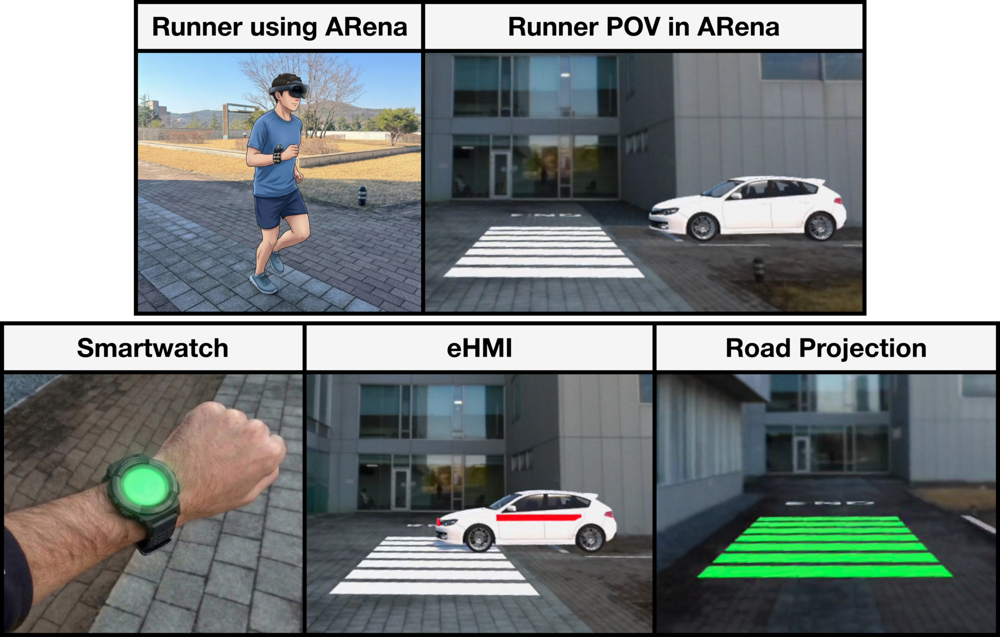
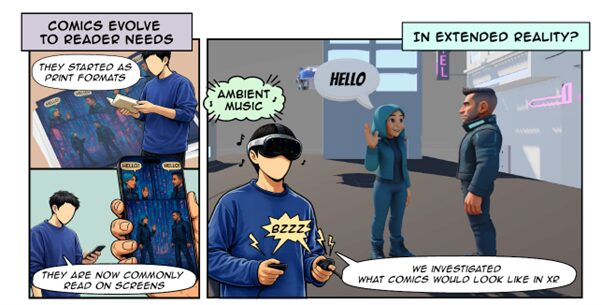
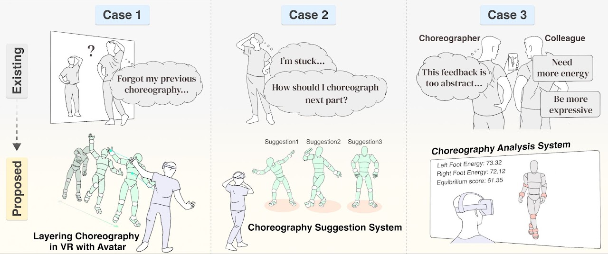
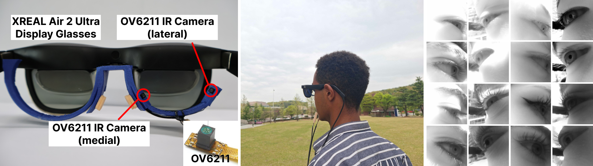
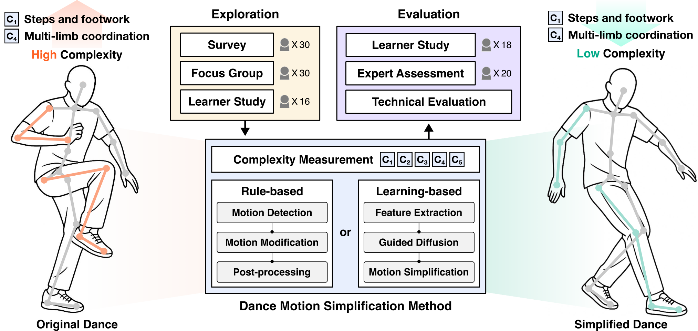

KAIST
WIT Lab at the School of Electrical Engineering, supervised by Prof. Ian Oakley. Research interests lie in:
- User-Centered Design
- Design and Evaluation of Interactive Systems
- Computational Interaction
- Embodied Activities and Learning
Ph.D. candidate at KAIST
hyhan@kaist.ac.krHyunyoung is a Ph.D. candidate in the Wearable and Interactive Technology Lab at the School of Electrical Engineering, KAIST, working with Prof. Ian Oakley. His research focuses on interactive systems and computational interaction for embodied activities grounded in user-centered design. He received his master's degree from KAIST (with Prof. Sang Ho Yoon) and bachelor's degree from DGIST. He researched in the Inference, Dynamics and Interaction Group at the University of Glasgow (with Prof. Roderick Murray-Smith and Dr. John Williamson).
His research and academic pursuits have been supported by the NRF Master's Research Grant (2024–2025), the Outstanding Doctoral Scholarship (2026–2030), and the Kim Young-Han Scholarship (2026–2027), along with various other fellowships from KAIST, IITP, KOSAF, and NRF.
WIT Lab at the School of Electrical Engineering, supervised by Prof. Ian Oakley. Research interests lie in:
HCI Tech Lab at the Graduate School of Culture Technology, supervised by Prof. Sang Ho Yoon.
Thesis: Designing and Evaluation of Virtual Reality-Based Creativity Support Tool for Choreographic Process
(Dissertation committee: Sang Ho Yoon, Sung-Hee Lee, and Junyong Noh)
Thesis: Development and Application of an Integrated AI Framework for Motion Analysis and Posture Correction for Future Healthcare
Supervisor: Prof. Roderick Murray-Smith and Dr. John Williamson
Supervisor: Prof. Sang Ho Yoon
Supervisor: Prof. Wooyoung Jung
Supervisor: Prof. Sungjin Lee
Supervisor: Prof. Iksoo Chang
Full list of publications: Publications / Google Scholar / C=Conference Proceeding, U=Under Review, *Equal Contribution





{kind=link}
{kind=link}
{kind=link}
{kind=link}
{kind=link}